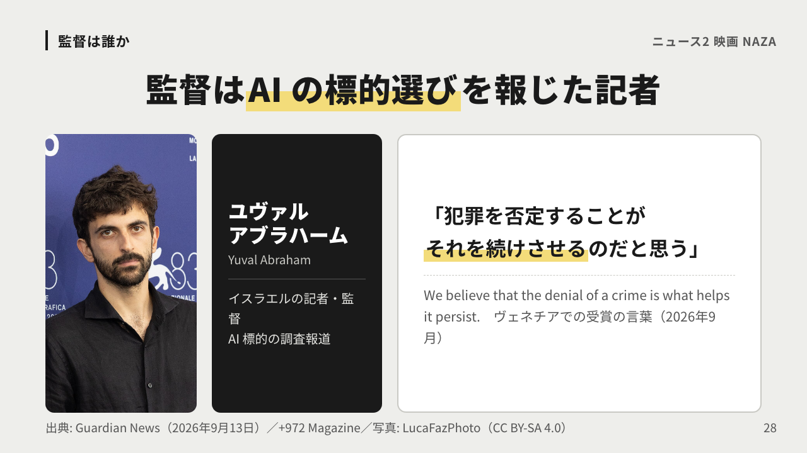
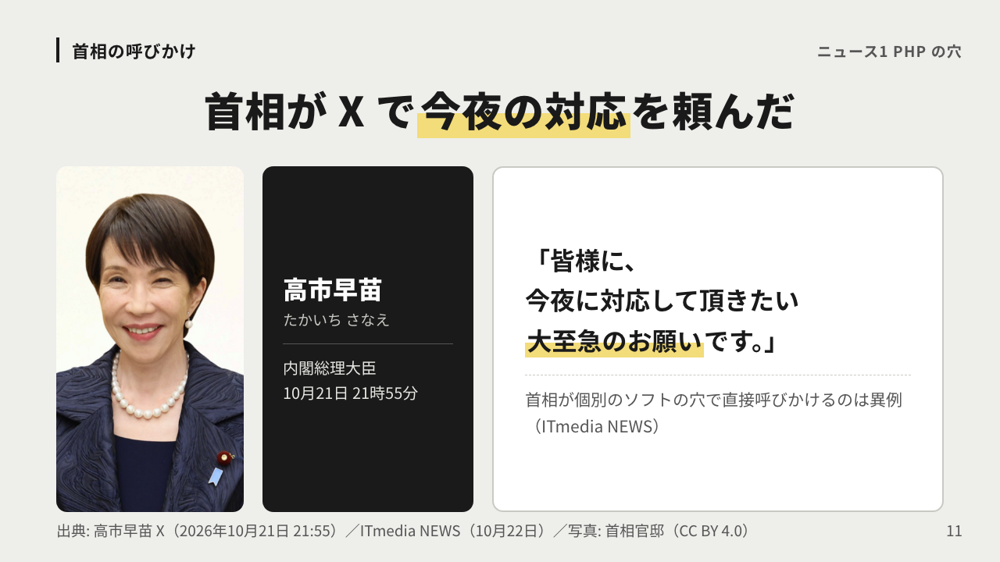
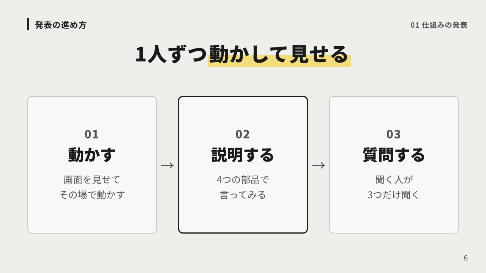
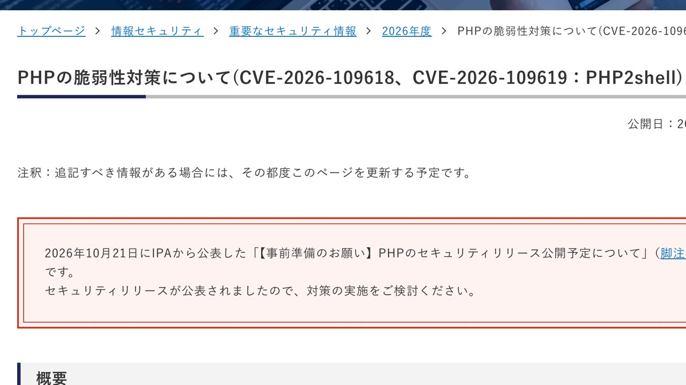
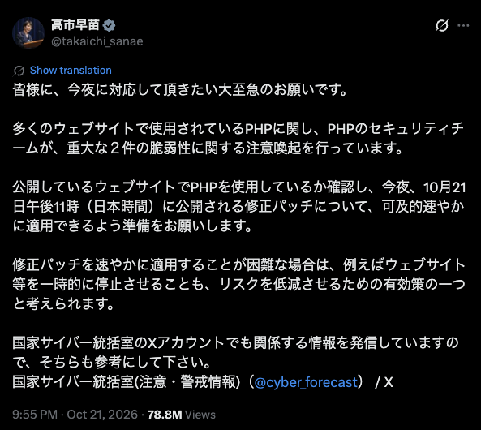
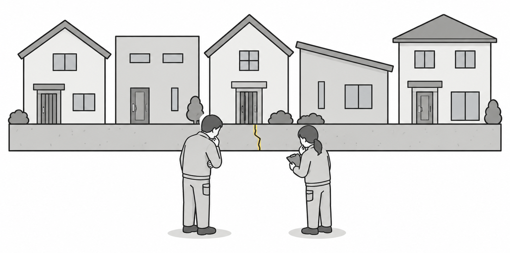
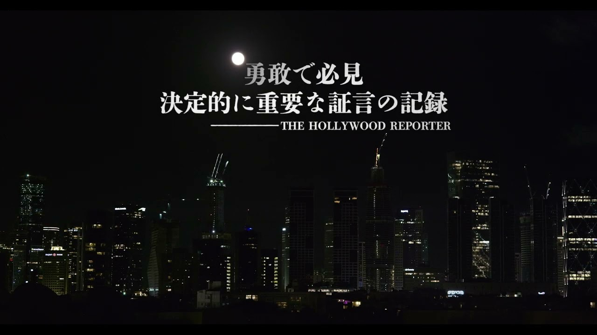
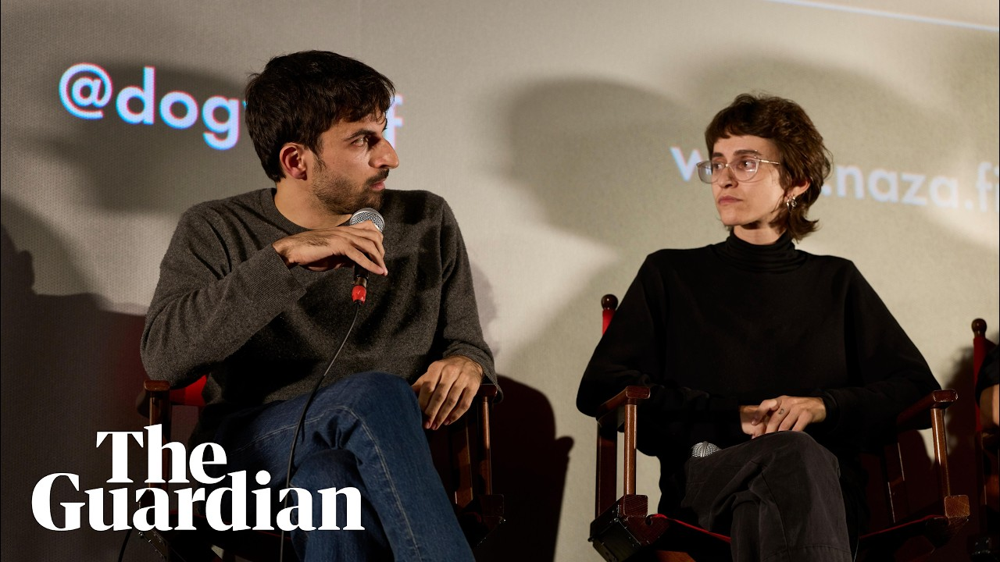

AI WORLD TOUR
作った仕組みの発表 今週の大事なニュース2つ



今日の流れ
| 順番 | 何をするか | 目安 |
|---|---|---|
| 01 発表 | 作った仕組みを動かして見せる | 50分 |
| 02 ニュース | PHP の穴 日本中のサイトが止まった理由 | 20分 |
| 03 ニュース | 映画 NAZA ナザ 戦場の AI と伝えられないこと | 25分 |
| まとめ | 次の1週間でやること | 5分 |
01
作った仕組みを動かして見せる
前回の宿題
これまでに作った仕組み
| いつ | 作ったもの | 今も動いている？ |
|---|---|---|
| #4 | メモがつながる図書館と司書のスキル | □ |
| #5 | kintone と Slack を AI につなぐ | □ |
| #8 | 資料づくりのスキル | □ |
| #10 | 毎朝 Slack に届く仕組み | □ |
| 自作 | 見積から請求までの kintone アプリ | □ |
発表の進め方
01
動かす
画面を見せて
その場で動かす
02
説明する
4つの部品で
言ってみる
03
質問する
聞く人が
3つだけ聞く
説明の枠
トリガー
いつ
何をきっかけに
動き出す？
ソース元
どこから
材料はどこの
正本から？
処理
何を
どこで何に
作り変える？
届け先
どこへ
誰の目に
届く？
聞く人の質問
01
止まったら
誰が気づく？
02
間違えたら
戻せる？
03
ほかの人でも
動かせる？
02
今週 日本中のサイトが止まった
今週のニュース

いつ
10月21日 23時に修正版
何が
ログインなしで乗っ取られうる穴
どこ
国内で211の組織がサイトを止めた
いま
8.1 以前は公式の修正版が出ない
出典: IPA 注意喚起（10月22日）／php.net（10月21日）／211は piyolog の集計
首相の呼びかけ
「皆様に、
今夜に対応して頂きたい
大至急のお願いです。」
10月21日 21時55分の X の投稿
首相が個別のソフトの穴で直接呼びかけるのは異例（ITmedia NEWS）
出典: 高市早苗 X（2026年10月21日 21:55）／ITmedia NEWS（10月22日）／写真: 首相官邸（CC BY 4.0）
投稿の全文

投稿で頼んだこと
今夜の修正に備える
出典: 高市早苗 X（2026年10月21日 21:55・表示 7,880万回）
よくある声
「そもそも
PHP って何？」
PHP とは
お問い合わせ
受け取る
送った中身を
受け取って保存する
ネットショップ
並べる
在庫やカートの中身を
その場で表示する
会員ページ
見分ける
ログインした人の
名前や履歴を出す
出典: php.net マニュアル「入門」「PHP の歴史」（1995年6月に公開）
どれくらい使われているか
世界のサイト
69%
サーバー側の言語が
分かるサイトのうち
.jp のサイト
84%
日本のドメインの
サイトでは
WordPress
40%
全サイトのうち
WordPress だけで
出典: W3Techs（2026年10月22日に確認）

乗っ取られると
01
盗まれる
会員の情報や
問い合わせの中身
02
書き換え
られる
偽のページや
偽の振込先
03
踏み台に
される
ほかの会社への
攻撃の足場
出典: JPCERT/CC 注意喚起（10月22日）／CISA の評価「影響: total」
時系列
| いつ | 何があったか |
|---|---|
| 2024年 | 外部の監査で兆し 直し方が決まらず止まる |
| 2026年8月 | AI を使った調査で見つかり 開発チームに報告 |
| 10月17日 | 公表の4日前に 攻撃の試しが見つかる |
| 10月21日 | 情報が漏れ 公表を1日早めて23時に修正版 |
| 10月22日 | 攻撃の試しが 数百万回に増える |
出典: PHP Foundation（10月21日）／Amazon（10月21日）／Cloudflare CEO の X（10月22日）
見つけたのは
各社と PHP 財団の発表
出典: OpenAI（10月21日）／Wiz（10月21日）／PHP Foundation（10月21日）
過去の大きな穴と比べる
| いつ | どこの穴か | 何が起きたか |
|---|---|---|
| 2014年 | 通信を暗号にする部品 | パスワードが漏れるおそれ |
| 2017年 | Windows の共有機能 | ホンダの工場も1日停止 |
| 2021年 | 多くのソフトの記録係 | 文字1行で乗っ取れた |
| 2026年 | 日本のサイトの土台 PHP | 国や銀行のサイトも停止 |
出典: heartbleed.com／英 NAO（2017年）／MONOist（2017年6月23日）／CyberScoop（2021年）ほか
これから
これまで
これから
誰の見方
穴は人が何年もかけて探す
→
AI で同じような発見が急増
OpenAI
見つけるのが一番難しい
→
確かめて直すのが追いつかない
Anthropic
公表から攻撃まで数週間
→
数日 この先さらに短く
英 NCSC
更新は7日や30日で
→
時間の単位で当てる
Amazon
出典: OpenAI・Amazon（2026年10月21日）／Anthropic（5月22日）／英 NCSC（2025年5月）
分かっていること
確か
修正版が
出ている
8.1 以前には
公式の修正版なし
有力な見方
数年に1度
の大きさ
広さと反応は大きい
悪用はより難しい
まだ分からない
被害の数
本当に乗っ取られた件数
人がどこで確かめたか
出典: php.net／CISA・NCSC-NL（悪用は公表時点で未確認）／各社の発表
うちは？
| 使っているもの | 直すのは誰 | うちがやること |
|---|---|---|
| サービス型のサイトや EC | サービスの会社 | お知らせを確かめる |
| レンタルサーバーと WordPress | サーバー会社と契約者 | PHP の版を確かめる |
| 制作会社に任せたサイト | 制作会社 | 版と更新の約束を聞く |
| 社内の機器やパッケージ | メーカー | メーカーのお知らせを見る |
出典: IPA 注意喚起（10月21日・22日）／JPCERT/CC（10月22日）／CISA（10月21日）
そのまま送れる聞き方
出典: php.net（修正版の番号）／IPA（10月22日）／JPCERT/CC（10月22日）
03
10月24日から日本の映画館で
どんな映画か
公開
10月24日から全国52館で順に
中身
兵士と諜報員24人の匿名の証言
作り手
ノー・アザー・ランドの監督のうち2人
評価
ヴェネチアで審査員特別賞
出典: 配給 トランスフォーマー公式サイト／The Guardian の発表（2026年9月24日）
予告編（日本語字幕つき）

日本語字幕つき 2分問い
「NAZA とは？」
答え
「犠牲にしてよい市民の数だ」
証言
「標的を生む工場だ」
証言
「1人の標的に対し
500人の犠牲を許されたことがある」
出典: 配給 トランスフォーマー公式 YouTube「予告編」（台詞は配給の字幕を書き写した）
監督は誰か
「犯罪を否定することが
それを続けさせるのだと思う」
We believe that the denial of a crime is what helps it persist.
ユヴァル・アブラハーム（イスラエルの記者・監督）
ヴェネチアでの受賞の言葉（2026年9月）
出典: Guardian News（2026年9月13日）／+972 Magazine／写真: LucaFazPhoto（CC BY-SA 4.0）
監督の言葉（日本語字幕は講師訳）

日本語字幕つき 約55秒主題
人を大量に殺す仕組みと
人がそれをできてしまう仕掛け
言葉
人の数を NAZA の数で呼ぶ
人を人と見なくなる
逆の面
爆撃する家の電話の声を
聞けることもある
出典: The Guardian「NAZA directors」（YouTube 2026年10月17日）字幕は講師訳
よくある声
「AI は戦争で
何をしているの？」
報道された仕組み（軍は否定）
01
集める
ほぼ全住民の
監視のデータ
02
点数
AI が戦闘員
らしさを採点
03
確認
人の確認は
1人約20秒
04
狙う
自宅に戻った
ところを知らせる
出典: +972 Magazine・The Guardian（2024年4月3日）情報将校6人の証言
証言に出てくる数字
標的の候補
3.7万
最も多い時に
AI が挙げた人の数
1人の確認
20秒
承認するまでに
かけた時間
誤り
1割
精度9割とされ
10件に1件は誤り
出典: +972 Magazine・The Guardian（2024年4月3日）証言による数字
軍の説明
報道と証言
AI の候補に判を押す
イスラエル軍の説明
決めるのは人
出典: The Guardian（2024年4月3日 軍の声明）／AFP（2026年9月11日）／The Guardian（10月1日）
人の確認
情報将校の証言（2024年）
出典: +972 Magazine・The Guardian（2024年4月3日）／赤十字国際委員会（2025年9月26日）
IT 企業との関わり
| 会社 | 報じられたこと | 会社の対応 |
|---|---|---|
| Microsoft | 傍受した通話を大量に保存 | 一部のサービスを停止 |
| Google と Amazon | 政府と大型のクラウド契約 | 違法な関わりは否定 |
| 米国の AI | 軍の利用が開戦前の約200倍 | OpenAI は提携なしと説明 |
出典: The Guardian（2025年8月）／Microsoft（2025年9月）／+972（2025年10月）／AP（2025年2月）
情報統制
外国の記者
入れない
2023年10月から
独自の取材は禁止
軍の検閲
1,635件
2024年に記事を
丸ごと差し止め
放送の停止
法律で
外国の放送局を
止められる
記者の死
189人
ガザで殺された
記者と報道関係者
出典: +972 Magazine（2026年2月・6月）／Al Jazeera（2025年12月）／CPJ（2026年9月時点）
誰が何を言っているか
| 誰が | 何を言っているか |
|---|---|
| 監督と The Guardian | 民間人を大量に殺す仕組みを証言で示した |
| イスラエル軍 | ゆがんだ描写 攻撃の判断は人がした |
| イスラエル政府 | 反ユダヤの扇動 国籍剥奪の法案を表明 |
| 国連の事務総長 | 生死の判断を計算に委ねてはならない |
| 国連人権理事会の委員会 | ガザでジェノサイド イスラエルは否定 |
出典: AFP・The Guardian・Al Jazeera（2026年9〜10月）／国連（2024年4月・2025年9月）
分けて見る
確か
24人の
証言
映画祭で受賞
政府と軍は強く非難
有力な見方
AI が
候補を出す
報道と証言による
軍は人が決めたと反論
まだ分からない
数字の
裏づけ
証言の数字の真偽
民間人の本当の割合
出典: このニュースの各枚の出典（最後の出典の枚にまとめた）
人がどこで確かめるかを先に決めておく
映画を見るなら
| 場所 | 映画館 | 上映の始まり |
|---|---|---|
| 東京 渋谷 | シアター・イメージフォーラム | 10月24日（土）から |
| 東京 立川 | kino cinema 立川髙島屋S.C.館 | 10月24日（土）から |
| 東京 武蔵村山 | イオンシネマむさし村山 | 10月24日（土）から |
| 横浜 みなとみらい | kino cinema 横浜みなとみらい | 10月24日（土）から |
| 川崎 新百合ヶ丘 | 川崎市アートセンター | 11月14日（土）から |
出典: 配給公式サイトの劇場一覧（2026年10月22日に確認）上映時間は各館のサイトで
今日のまとめ
仕組みの発表
止まったら気づけて 壊れたら戻せる形にする
PHP の穴
直す立場か確かめ 誰が何時間で当てるか決める
映画 NAZA
人が確かめる所と時間を先に決めておく
宿題
止まったら気づけて 壊れたら戻せる
出典
出典
出典
出典
出典